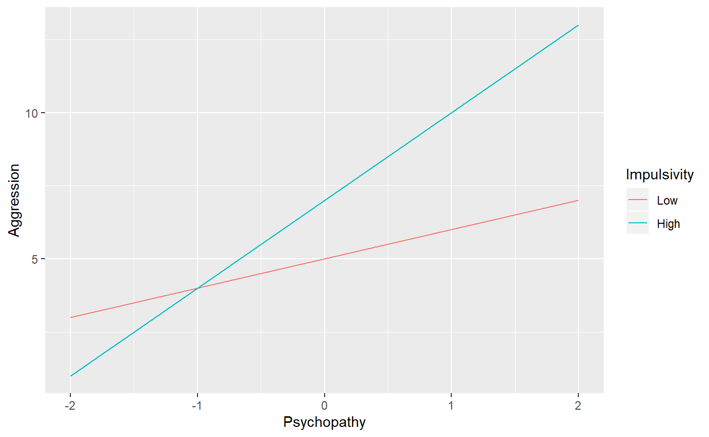

The modregplot package creates simple slopes plots from a moderated regression equation. It is useful when you are planning an analysis and want to see what your hypothesized effects would look like. You can also use it to see what simple slopes would look like from published findings that have no accompanying plots.
You can install the latest version of modregplot from github with:
Suppose you see a moderated regression result:
Aggression = 6 + 2 * Psychopathy + 1 * Impulsivity + 1 * Psychopathy * Impulsvity
What will this result look like? Suppose that a high value of impulsivity is 1 and a low value is -1.
library(modregplot)
modregplot(
predictor_range = c(-2, 2),
moderator_values = c(Low = -1, High = 1),
intercept = 6,
predictor_coef = 2,
moderator_coef = 1,
interaction_coef = 1,
predictor_label = "Psychopathy",
criterion_label = "Aggression",
moderator_label = "Impulsivity"
)